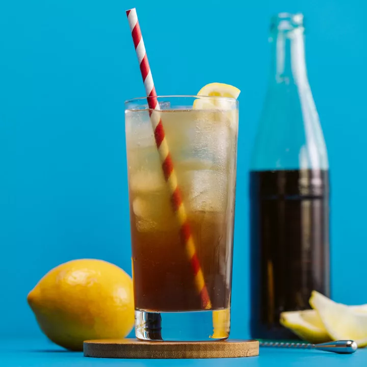

Long Island

The Long Island Iced Tea was popularized in the 1970s and remains a beloved drink. It’s possible the cocktail was born out of Prohibition, when thirsty scofflaws wanted to disguise their booze. It’s also possible the drink sprung up in the ’70s at a bar in Long Island, or maybe at a TGI Friday’s. This much is known: You still can’t throw a lemon wedge inside the chain restaurant without knocking one over.
Ingredients
- 3/4 ounce vodka
- 3/4 ounce white rum
- 3/4 ounce silver tequila
- 3/4 ounce gin
- 3/4 ounce triple sec
- 3/4 ounce simple syrup
- 3/4 ounce lemon juice, freshly squeezed
- Cola, to top
- Garnish: lemon wedge
Steps
- Add the vodka, rum, tequila, gin, triple sec, simple syrup and lemon juice to a Collins glass filled with ice.
- Top with a splash of the cola and stir briefly.
- Garnish with a lemon wedge.
- Serve with a straw.